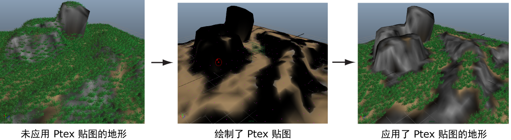

在景观场景中，许多草丛显示在岩层顶部。您可以绘制基于 Ptex 的“密度”(Density) “遮罩”(Mask)，以避免在这些区域生成草丛。
请参见使用 Ptex 贴图控制基本体。
- 在“生成器属性”(Generator Attributes)部分中，单击“遮罩”(Mask)旁边的
 图标，然后从显示的菜单中选择“创建贴图”(Create Map)。
图标，然后从显示的菜单中选择“创建贴图”(Create Map)。 - 在“创建贴图”(Create Map)窗口中，键入贴图的名称，例如 mask_GrassClumps。
- 进行下列设定：
- 将“贴图分辨率”(Map Resolution)设置为 30。
这会设置 Ptex 贴图逐面的 Texel 数。
- 将“起始颜色”(Start Color)设置为“白色”(White)。
这会将贴图值设置为 1，这样会允许几何体在曲面上进行实例化。在网格上绘制时，您使用黑色，这样会遮罩这些区域。
- 将“贴图分辨率”(Map Resolution)设置为 30。
- 在“工具设置”(Tool Settings)窗口中，设定下列内容：
- 在“Artisan”旁边，选择边缘清晰的笔刷。
- 在“颜色”(Color)部分中，单击颜色样例并选择黑色。
- 在“绘制操作”(Paint Operations)部分中，将“融合模式”(Blend Mode)设置为“默认”(Default)。
- 在“光笔压力”(Stylus Pressure)部分中，关闭“光笔压力”(Stylus Pressure)。
注： 如果“3D 绘制工具”(3D Paint Tool)窗口未显示，请在工具箱中单击图标 以将其打开。
以将其打开。 - 使用“3D 绘制工具”(3D Paint Tool)绘制您不希望生成草丛的网格区域。
- 单击
 图标以保存 Ptex 贴图。
图标以保存 Ptex 贴图。 - 预览描述。
这样，该景观的岩石地形区域就不会再生成草丛。
